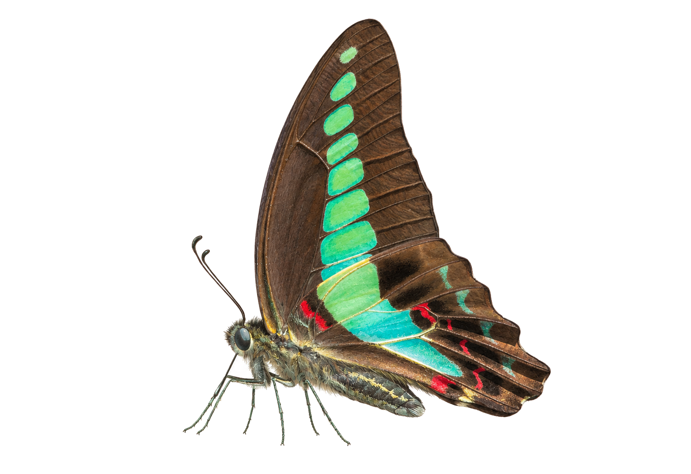

Papilionidae · 003 / 165
কমন ব্লুবটল
Graphium sarpedon

বৈশিষ্ট্য ও শনাক্তকরণ
কালো ডানার ওপর নীলচে-সবুজ ফিতা চোখে পড়ে। স্পষ্ট লেজ নেই; দ্রুত উড়ে।
স্ত্রী ও পুরুষের পার্থক্য
ডানার ফিতার রঙ দিয়ে স্ত্রী-পুরুষ নিশ্চিত করা কঠিন। পুরুষকে ভেজা মাটিতে জল পান করতে প্রায়ই দেখা যায়।
আকার
সামনের এক ডানার দৈর্ঘ্য 32–45 mm; সাধারণ নির্দেশক, শুধু ওকিনাওয়ার নমুনার পরিসর নয়।
ওকিনাওয়ার দ্বীপে রেকর্ড
স্থানীয় সূত্রে উল্লিখিত দ্বীপের রেকর্ড নিচের সূত্রে দেখুন। ওকিনাওয়া থেকে মিয়াকো ও ইয়ায়েয়ামা পর্যন্ত পার্ক, রাস্তার গাছ ও চিরসবুজ বনের আশপাশে পাওয়া যায়।
আবাসস্থল
সমতলের পার্ক, রাস্তার গাছ ও চিরসবুজ বনের আশপাশ।
জীবনযাপন ও অতিরিক্ত তথ্য
ফুলের মধু পান করে; পুরুষকে ভেজা মাটি থেকে জল নিতে দেখা যায়। Graphium doson-এর ফিতা বেশি খণ্ডিত।
শূককীট ও খাদ্য উদ্ভিদ
মূলত Lauraceae পরিবারের কর্পূরগাছ, টাবুনোকি ও সংশ্লিষ্ট গাছের পাতা খায়।
তথ্যসূত্র ও সহায়ক পাঠ
- 沖縄蝶類生態図鑑：アオスジアゲハ
ডেটায় উল্লেখিত সূত্র দেখার তারিখ: 2026-11-10 - 形態・大きさの補足資料
ডেটায় উল্লেখিত সূত্র দেখার তারিখ: 2026-11-10
তথ্য সরবরাহকৃত ডেটার উপর ভিত্তি করে তৈরি (হালনাগাদ: ১০ নভেম্বর ২০২৬)। কোনো দ্বীপের রেকর্ড সেখানে বর্তমান স্থায়ী বসবাস বা সহজে দেখা পাওয়ার নিশ্চয়তা নয়। চিত্র নির্দেশক; শনাক্তকরণে বাস্তব নমুনা ও সূত্র মিলিয়ে দেখুন।